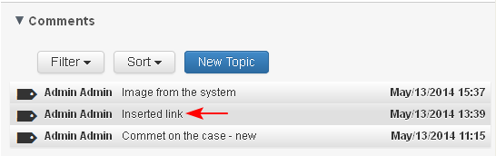

The comment could have only one level of replies. There is no reply to a reply.
- The user opens the comment which he/she wants to reply on.

- Next to each comment there is a button "Reply". The user selects the button.
- A free text editor opens (1) where the user writes his/her notes (3) and saves (4).
The free text editor filed has the same built in functions (2) for insert links and favorites as in the Create new comment.
- The reply on the comment is saved.
- The counter next to the original comment, showing the number of replies (1-2), increases with 1.
- If the user replies to a comment with status "Resolved", then the comment status automatically changes to "Open".